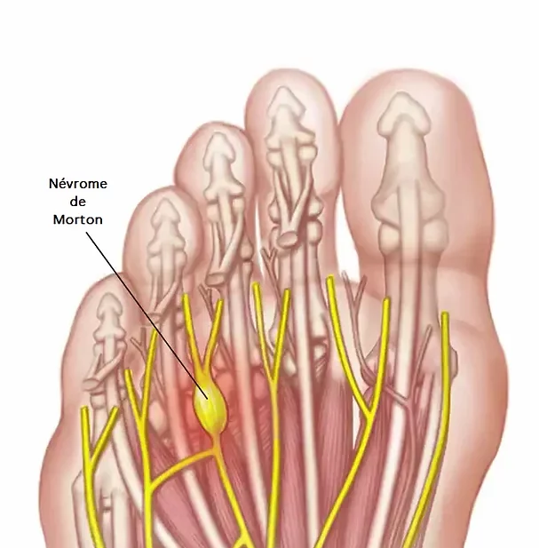

Névrome de Morton
Le névrome de Morton est un épaississement nerveux causé par l’irritation des nerfs entre les os longs du pied, souvent entre le 3e et le 4e métatarsien. Ce renflement nerveux se forme à cause de la compression répétée des nerfs lors de la marche.
Symptômes
- Picotements : Sensation de picotement sous et entre les orteils.
- Douleur : Douleur aiguë ou sensation de décharges électriques dans la plante du pied ou à la base des orteils.
- Engourdissement : Engourdissement des orteils.
- Sensation de pierre : Impression de marcher avec une petite pierre sous le pied.
Diagnostic du Névrome de Morton
Le diagnostic du névrome de Morton commence par un interrogatoire et un examen clinique, où le patient décrit des douleurs caractéristiques. Ensuite, une échographie est réalisée pour confirmer la présence du névrome. Selon son épaisseur, un traitement approprié est proposé.
Traitements Disponibles
- Injections : Des injections de stéroïdes avec un anesthésique local peuvent être prescrites pour soulager la douleur.
- Cryochirurgie : Si les douleurs persistent, la cryochirurgie est recommandée. Cette technique mini-invasive consiste à insérer une aiguille spéciale (Cryo sonde) dans le pied, où une boule de glace se forme pour détruire les tissus superflus et libérer le nerf. L'intervention est guidée par échographie pour une précision maximale et ne laisse aucune cicatrice. Elle dure environ 30 minutes.
Suivi Post-Opératoire
Après l'intervention, il est conseillé de :
- Porter des chaussures post-opératoires spécifiques.
- Prendre des antalgiques pendant une semaine.
- Observer une période d'immobilité de 3 jours et une semaine d'activité réduite pour prévenir l'œdème.
- Éviter les soins à domicile et la surélévation du pied.
- Ne pas pratiquer de sport pendant un mois.
Certaines personnes peuvent ressentir un gonflement douloureux pendant 2 à 3 mois, surtout si deux névromes du même pied ont été traités simultanément.
Vidéo : Entorse de cheville
(attention certaines images sont à éviter pour les personnes sensibles)